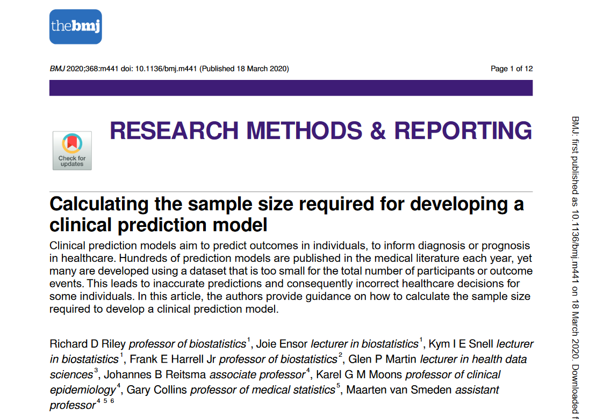
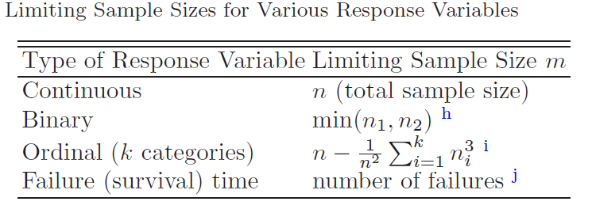
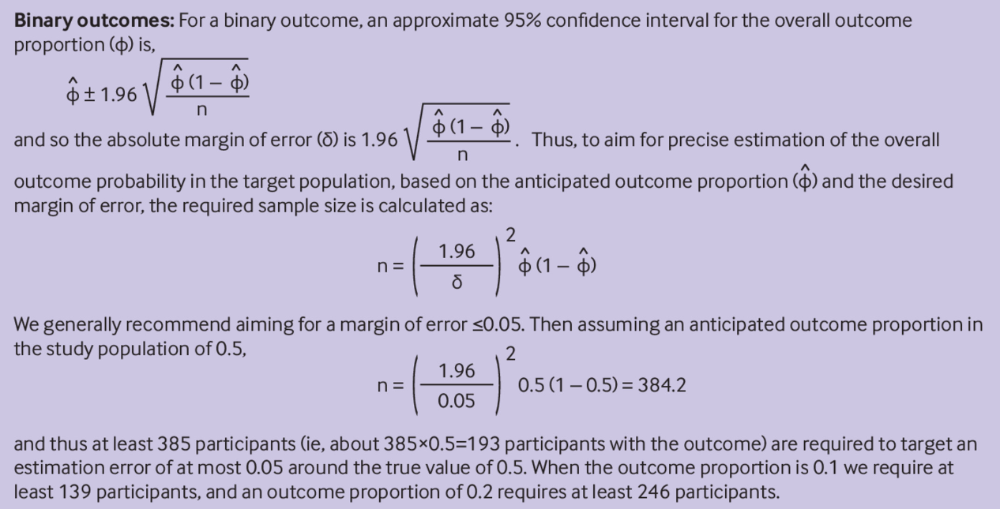
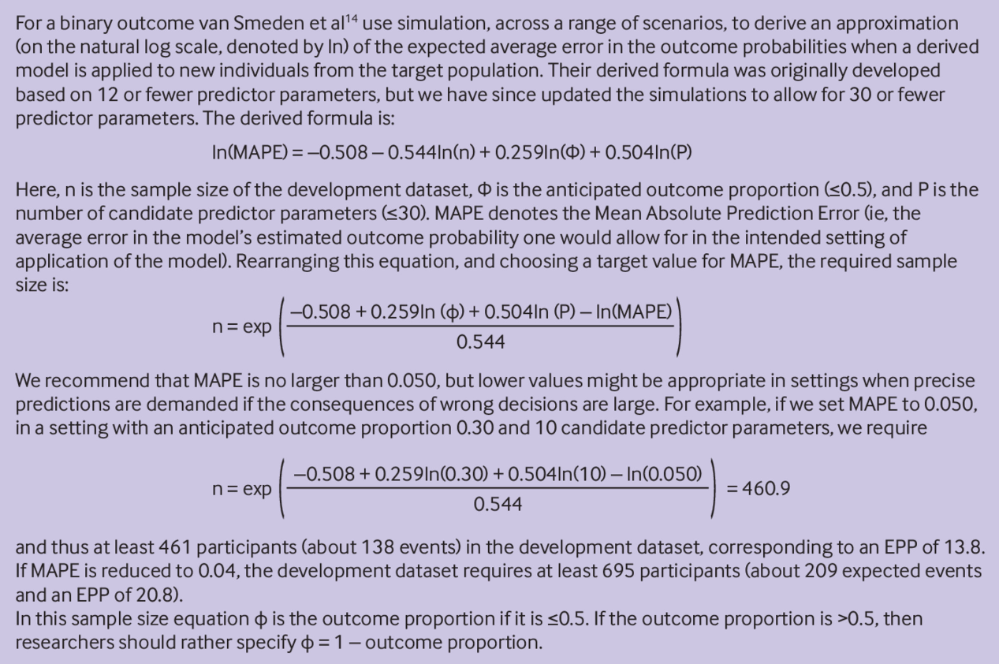
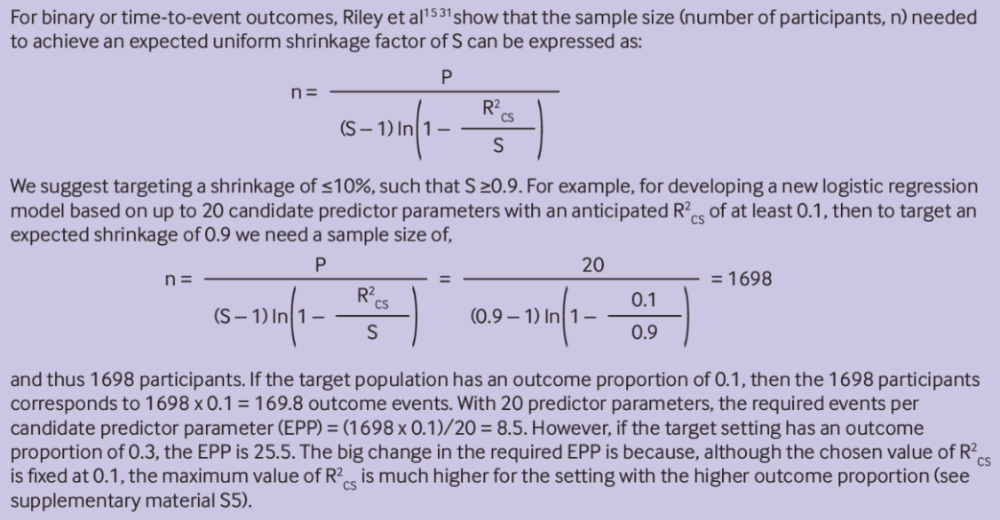
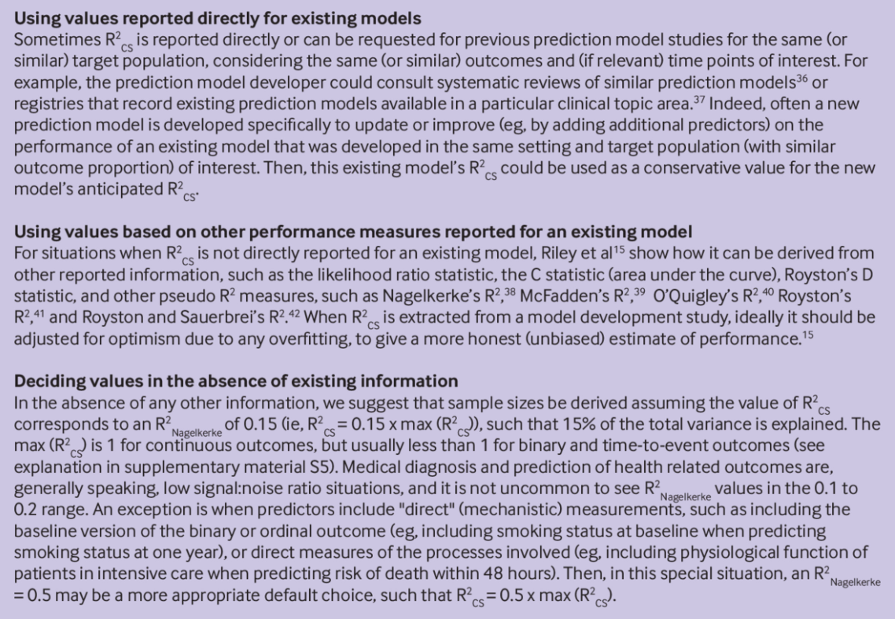
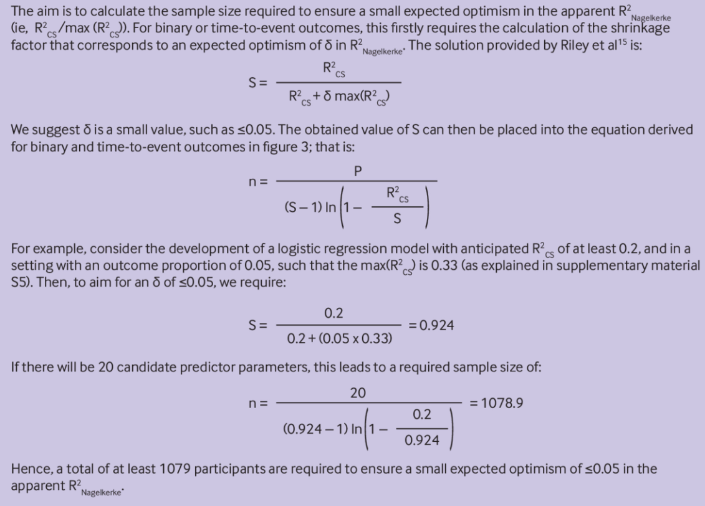
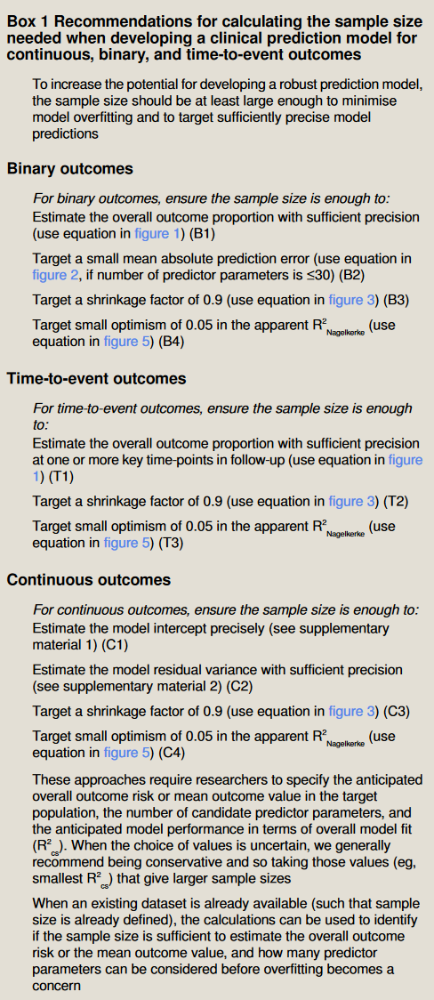

library(pmsampsize)42 开发预测模型样本量计算
BMJ在2020年发表了一篇关于预测模型样本量计算的文章（10.1136/bmj.m441，这篇文章是免费下载的，记得把补充文件也下载下来），算是目前样本量计算的指南性文件。
并且作者还提供了一个R包(pmsampsize)用于计算样本量，使用起来也非常方便，有点类似于pwr包计算样本量

但是要注意该文献的样本量计算是针对开发临床预测模型需要的样本量，也就是训练集的样本量，不是外部验证集的样本量。如果是验证集的样本量，作者专门又写了3篇文章，分别针对回归、二分类、生存数据：
- Riley R D, Collins G S, Ensor J, et al. Minimum sample size calculations for external validation of a clinical prediction model with a time-to-event outcome[J]. Statistics in Medicine, 2022, 41(7): 1280–1295. DOI:10.1002/sim.9275.
- Riley R D, Debray T P A, Collins G S, et al. Minimum sample size for external validation of a clinical prediction model with a binary outcome[J]. Statistics in Medicine, 2021, 40(19): 4230–4251. DOI:10.1002/sim.9025.
- Archer L, Snell K I E, Ensor J, et al. Minimum sample size for external validation of a clinical prediction model with a continuous outcome[J]. Statistics in Medicine, 2021, 40(1): 133–146. DOI:10.1002/sim.8766.
另外，该文献的样本量计算方法是针对3大回归模型的：线性回归、逻辑回归、cox回归。如果是一些机器学习方法（比如随机森林、支持向量机等）则需要更多的样本。
42.1 经典方法
Harrell老爷子在他的书《Regression Modeling Strategies》中介绍的开发模型的样本量计算方法是：
在开发数据集(也就是训练集)中，连续型结果的有效样本量由研究参与者的总数决定(有多少用多少)。对于二分类结果，有效样本量通常被认为大约等于事件（有结果的事件）和非事件（没有结果的事件）的最小值; time-to-event数据中，样本量可以粗略等于阳性事件的数量。

在为二分类或time-to-event数据开发预测模型时，所需要的样本量常用的计算方法是10EPV法，即阳性事件的数量至少是预测变量个数的10倍（10 events per variable，10EPV）。
但是“variable”一词具有误导性，因为在模型中一个预测变量可能有多个β（即回归系数），例如，具有三个类别的分类型预测变量就会有两个β（例如肿瘤等级1、2、3，那么就会有β(2和1比)、β(3和1比)，因为分类变量在回归分析中需要进行哑变量编码）。还有就是在建模过程中使用了多项式转换和样条变换等也会使得同一个变量有多个β，如果变量之间有交互项也会产生同样的结果。
由于预测模型的参数（也就是回归系数β）通常多于实际的预测变量个数，所以最好使用10EPP（10 events per candidate predictor parameter）法，即阳性事件的数量至少是“候选预测变量的参数”的10倍。“候选”一词很重要，因为模型过拟合的程度与预测变量参数的数量有关，而不是最终模型方程中的参数数量。
但是10EPP原则目前也有一些争议，也有大佬建议5EPP或者15、20、50EPP。这些数量的使用都是和具体的情况有关的，也没个金标准，不仅取决于相对于候选预测变量参数数量的事件数量，还取决于参与者总数、研究人群中的结果比例（发生率）以及模型的预期预测性能等。
42.2 4步法
Van Smeden等和Riley等人最近的工作描述了如何计算预测模型开发所需的样本量，使用条件是用户指定目标人群中的总体结果风险或平均结果值、候选预测变量参数的数量以及总体模型拟合方面的预期模型性能。具体实施起来总结为4个步骤：
- 第一步是确定需要多少样本才能准确估计平均风险（也就是平均概率，对应二分类或者生存数据）或者平均值（对应连续型数据）；
- 第二步是确定需要多少样本才能让模型的预测值和真实值之间的误差更小；
- 第三步是确定有足够的的样本量以防止过拟合；
- 第四步是确定有足够的的样本量使模型的表面性能和真实性能的误差更小。
42.2.1 第一步
样本大小必须让预测模型的截距能被精确估计，以确保开发的模型可以准确预测平均结果值(对应连续型数据)或总体结果比例(对应二分类或者生存数据)。一个简单的方法是计算：能够准确估计“没有预测变量的空模型(null model)的截距”所需要的样本量。
这里涉及一个简单的数学知识，就是线性模型的截距反映了模型预测的平均值。
这个“准确估计”一般要求误差在0.05以内，也就是说预测值最好不要超过均值的95%可信区间。
下图是计算公式和一个例子。假如一个二分类数据，它的阳性事件比例是0.5，为了控制误差在0.05以内，根据以下公式计算，需要的样本量最少是385个。

42.2.2 第二步
预测值和真实值之间的误差可以用很多指标衡量，比如平均绝对百分比误差（Mean Absolute Percentage Error，MAPE），这个指标其实是衡量回归模型的常用指标，对于二分类数据如果使用的是概率的话也能用这个指标衡量。
下面是计算公式和一个例子。假如一个二分类数据，它的阳性事件比例是0.3，预测变量有10个，为了控制误差（MAPE）在0.05以内，根据以下公式计算，需要的样本量最少是461个。

42.2.3 第三步
样本量越少且预测变量数量越多，则越容易过拟合，因此需要足够的样本量防止过拟合。
建模过程中通常会使用收缩法（Shrinkage，或者被称为惩罚(penalisation)或正则化(regularisation)）来降低过拟合的风险。Riley等人建议使用一个较小的收缩值（≤10%），并计算此时所需要的样本量。并且还需要指定候选预测变量参数的个数以及一个模型性能指标，比如Cox-Snell R2(记为CS-R方，属于伪R方的一种)。CS-R方可以反应信噪比（signal:noise），从而反应模型是否过拟合。
对于连续型数据来说，CS-R方就是决定系数，反应模型所能解释的方差（或者叫变异）百分比，范围是0到1之间，越接近1越好，说明模型能够准确识别数据内部的模式，不会被噪声（误差）干扰，如果CS-R方接近0则说明模型很有可能过拟合。
对于二分类数据和生存数据来说，CS-R方的范围是0到max(CS-R方)。对于逻辑回归模型来说，如果阳性事件发生率为0.5，0.4，0.3，0.2，0.1，0.05，0.01，那么对应的max(CS-R方)分别是0.75，0.74，0.71，0.63，0.48，0.33，0.11。所以即使模型的预期性能非常好，这个CS-R方的值也一般会选择比较小的值。
以下是二分类和生存数据的样本量计算公式和一个示例。对于一个逻辑回归模型，如果有20个候选预测变量参数（EPP），CS-R方选择0.1，那么为了使收缩值保持在10%，最少的样本量是1698。

Cox-Snell R2(也就是CS-R方)的选择有多种方法，以下是作者比较推荐的几种：
- 直接使用别人文献里报道的值
- 使用其他指标近似，比如使用C指数、AUC值、其他伪R方等
- 根据max(CS-R方)计算

本文献的附件5提供了详细的公式用于计算max(CS-R方)，感兴趣的自己查看一下吧。
42.2.4 第四步
应该有足够多的样本量保证模型的表面指标和真实指标之间的差异足够小。
表面指标（apparent values），假如我们用训练集开发了一个模型，然后让这个模型对训练集进行预测，这样得到的指标就是表面指标，这种计算模型指标的方法叫做重代入法（resubstitution）。真实指标是指模型在其他数据中（就是模型开发时没用过的数据）得到的更真实、更接近模型真实性能的指标。
本篇文献中采用的指标是另外一种调整的R方，即：Nagelkerke-R方（也是伪R方的一种），Nagelkerke-R方=CS-R方/max(CS-R方)。
下面是二分类和生存数据的样本量计算公式。对于一个逻辑回归模型，假设阳性事件的比例是0.05（此时对应的max(CS-R方)是0.33），指定CS-R方为0.2，那么为了使真实的Nagelkerke-R方和表面Nagelkerke-R方的差异保持在0.05，至少需要的样本量是1079。

42.3 总结
下面是一个总结，对于连续型数据，推荐使用4步法(C1-C4)，对于二分类数据推荐使用4步法(B1-B4)，对于生存数据推荐使用3步法(T1-T4)。

除此之外作者专门写了一个R包用于计算临床预测模型的样本量：pmsampsize，这个R包可以计算以上每一个步骤（除了B2这个步骤不行，这一步是通过网页计算的，网址是：https://mvansmeden.shinyapps.io/BeyondEPV/）所需要的样本量，并选择最大的一个作为开发模型所需要的最少样本量。
42.4 R包使用方法
下面用3个实例演示这个R包的使用方法。
42.4.1 二分类数据
假如我们要根据妊娠15周时测定的各种指标预测孕妇发生子痫前期的风险，这是一个二分类数据，结果变量是发生子痫/不发生子痫。
假设该数据中，发生子痫的比例是0.05（阳性事件的比例），候选预测变量的参数数量是30（EPP是30），max(CS-R方)是0.33。如果我们预期模型能够解释15%的变异，根据第3步中介绍的CS-R方的计算方法，可以得到CS-R方=0.15*0.33=0.05。
有了这几个数据，就可以计算样本量了：
pmsampsize(
type = "b", # 二分类数据
csrsquared = 0.05, # CS-R方
parameters = 30, # EPP的数量
prevalence = 0.05, # 阳性事件发生率
seed = 123 # 设置随机数种子
)
## NB: Assuming 0.05 acceptable difference in apparent & adjusted R-squared
## NB: Assuming 0.05 margin of error in estimation of intercept
## NB: Events per Predictor Parameter (EPP) assumes prevalence = 0.05
##
## Samp_size Shrinkage Parameter CS_Rsq Max_Rsq Nag_Rsq EPP
## Criteria 1 5249 0.900 30 0.05 0.328 0.153 8.75
## Criteria 2 1770 0.753 30 0.05 0.328 0.153 2.95
## Criteria 3 73 0.900 30 0.05 0.328 0.153 0.12
## Final 5249 0.900 30 0.05 0.328 0.153 8.75
##
## Minimum sample size required for new model development based on user inputs = 5249,
## with 263 events (assuming an outcome prevalence = 0.05) and an EPP = 8.75
##
## 对于二分类数据，使用4步法计算样本量，其中B2这一步不能通过这个包计算，所以这个包给出了其他3个步骤所需要的样本量，B2这个步骤算出来是需要544例，因为要同时满足4个步骤的要求，所以最终需要的样本量是5249例。
42.4.2 生存数据
假如我们要预测治疗停止一段时间后，静脉血栓栓塞复发的风险。这是一个time-to-event类型的数据，结局是复发/不复发，时间就是治疗停止后的时长。
假设该数据中，C指数是0.69，CS-R方是0.051，EPP=30，平均随访时间是2.07年，阳性事件发生比例是0.065，需要进行预测的时间点选择2年，那么样本量计算如下：
pmsampsize(
type = "s", # 生存数据
csrsquared = 0.051, # CS-R方
parameters = 30, # EPP的数量
rate = 0.065, # 阳性事件发生率
timepoint = 2, # 指定要预测的时间点
meanfup = 2.07 # 平均随访时间
)
## NB: Assuming 0.05 acceptable difference in apparent & adjusted R-squared
## NB: Assuming 0.05 margin of error in estimation of overall risk at time point = 2
## NB: Events per Predictor Parameter (EPP) assumes overall event rate = 0.065
##
## Samp_size Shrinkage Parameter CS_Rsq Max_Rsq Nag_Rsq EPP
## Criteria 1 5143 0.900 30 0.051 0.555 0.092 23.07
## Criteria 2 1039 0.648 30 0.051 0.555 0.092 4.66
## Criteria 3 * 5143 0.900 30 0.051 0.555 0.092 23.07
## Final SS 5143 0.900 30 0.051 0.555 0.092 23.07
##
## Minimum sample size required for new model development based on user inputs = 5143,
## corresponding to 10646 person-time** of follow-up, with 692 outcome events
## assuming an overall event rate = 0.065 and therefore an EPP = 23.07
##
## * 95% CI for overall risk = (0.113, 0.13), for true value of 0.122 and sample size n = 5143
## **where time is in the units mean follow-up time was specified in生存数据的样本量计算遵循4步法，所以结果中给出了4个步骤每一步骤所需要的样本量，最终需要的样本量是5143例。
42.4.3 连续型数据
假如我们要预测青少年的无脂肪体重，该任务很明显是一个回归任务，结果变量是数值型的。
假设该数据中，CS-R方为0.9，EPP=20，总体的平均无脂肪体重是26.7kg（截距的值），总体的无脂肪体重的标准差是8.7kg，那么计算样本量的代码为：
pmsampsize(
type = "c", # 连续型数据
rsquared = 0.9, # 连续型数据的CS-R方=R方
parameters = 20, # EPP的数量
intercept = 26.7, # 截距，也就是均值
sd = 8.7 # 总体的标准差
)
## NB: Assuming 0.05 acceptable difference in apparent & adjusted R-squared
## NB: Assuming MMOE <= 1.1 in estimation of intercept & residual standard deviation
## SPP - Subjects per Predictor Parameter
##
## Samp_size Shrinkage Parameter Rsq SPP
## Criteria 1 68 0.900 20 0.9 3.40
## Criteria 2 41 0.853 20 0.9 2.05
## Criteria 3 254 0.970 20 0.9 12.70
## Criteria 4* 254 0.970 20 0.9 12.70
## Final 254 0.970 20 0.9 12.70
##
## Minimum sample size required for new model development based on user inputs = 254
##
## * 95% CI for intercept = (26.36, 27.04), for sample size n = 254连续型数据的样本量计算也遵循4步法，最终所需要的样本量是254。